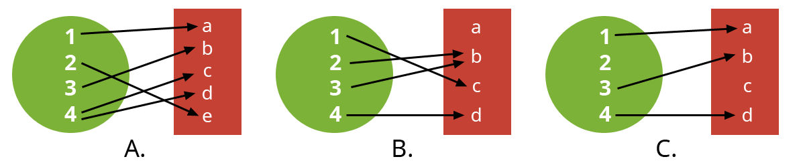
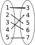
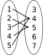
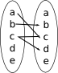
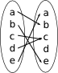
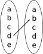

7. Funktioner
En funktion är en regel som ser till att varje värde, invärde, som sätt in i funktionen får ett eget utvärde.
Tänk dig en samling av människor som alla har sin favoritfärg bland röd, oragne, gul, grön, blå och viloett. Invärdet, det som vi sätter i funktionen är människan, och utvärdet är favoritfärgen. Funktionen sorterar människorna i sex stycken olika grupper. Tex kan Anna ha favortifärgen röd medan Bertil kan ha favoritfärgen violett. Det är helt möjligt att flera personer har samma favoritfärg. Däremot kan inte en person ha två favoritfärger.
Vi talar om att vi har ett invärde som sätts in i en funktion och vi får ett utvärde. Matematiskt beskriver vi det som nedan.
Mera matematiska egenskaper för funktioner hittar du i kapitel 10. Extra: Relationer.

Fundera med din bänkkamrat vilka av bilderna A, B och C representerar en funktion. Tänk er personer och deras favoritfärger om ni har svårt att komma igång.
För att en funktion skall var en funktion behöver vi en variabel, bokstav. Oftast är variabeln \(x\). Sedan behöver vi en regel, ett utryck. Till sist namnger vi funktionen, tex \(f\), \(g\) osv.
| Funktion | Variabel | Uttryck | Namn |
|---|---|---|---|
| \(f(x)=x+3\) | \(x\) | \(x+3\) | f |
| \(g(a)=a^2-1\) | \(a\) | \(a^2-1\) | g |
| \(h(a,b) = a+b\) | \(a\) och \(b\) | \(a+b\) | h |
Exempel 1 Bestäm regeln som sammanbinder följande värden och funktionsvärden samman då
\(0 \mapsto -2\)
\(1 \mapsto 0\)
\(2 \mapsto 2\)
Lösning
Uppgifter
- Bestäm ekvationen för funktionen där \(1 \to -1\), \(3 \to -3\) och \(4 \to -4\).
Fundera vad som händer med talen. Se vid behov på exempel 1.
Vi märker att talen som vi sätter in i funktionen blir det motsatta.
Det kan vi beskriva som \(f(x)=-x\).
- Bestäm utrycket för funktionen \(f\) då talen 0, 1 och 2 avbildas på följande sätt \(0 \mapsto 4\), \(1\mapsto 5\) och \(2 \mapsto 6\).
Fundera på vad som du måste göra åt talen 0, 1 och 2 för att få värden 4, 5 och 6. Till ditt förfogande har du alla fyra räknesätt.
\(f(0)=4=0+4\)
\(f(1)=5= 6-1= 5\cdot 1 = 1 +4\)
\(f(2)=6=3\cdot 2=8-2=2+4\)
Visst märker du att i alla fall får vi det värde som vi söker genom att adderat till talet 4, alltså: \(f(x) = x+4\).
- Bestäm ekvationen för funktionen där \(1 \to 1\), \(2 \to \dfrac{1}{2}\), \(3\to \dfrac{1}{3}\) och \(4 \to \dfrac{1}{4}\).
Vad händer med invärdena? Se vid behov på exempel 1.
Vi märker att vi får det inverterade talet.
Funktionen är \(f(x)=\dfrac{1}{x}\).
- Bestäm utrycket för \(g\) då
\(g(0) = 2\)
\(g(1) = 3\)
\(g(2) = 6\)
\(g(3) = 11\)?
Fundra på vad som måste hända med värden som du sätter in i funktionen för att få funktionsvärdena.\(g(0)=0^2+2=2\)
\(g(1)=1^2+2=3\)
\(g(2)=2^2+2=6\)
\(g(3)=3^2+2=11\)
Alltså: \(g(x) = x^2 + 2\).
Bestäm om följande relationer är funktioner.
Påstående Funktion Inte funktion  
    Påstående Funktion Inte funktion - Ja.
- Nej, 4:an avbildas på flera olika värden i värdemängden.
- Ja.
- Nej, c:et avbildas på flera olika värden i värdemängden.
- Ja.
- Ja.
- Skriv ner regeln för funktionen då:
- Invärdet blir tre gånger större och till produkten adderas åtta.
\(f(x)=3x+8\)
- Invärdet kvadreras och produkten blir tre gånger större, till sist adderar man 5 till produkten.
\(g(x)=3x^2+5\)
- Invärdet blir tre gånger större och till produkten adderas åtta.
- Bestäm regeln för följande funktioner och fyll i det som saknas.
-
\(x\) \(f(x)\) -1 -3 0 -1 1 1 2 3 3 9 17 \(x\) \(x\) \(f(x)\) -1 -3 0 -1 1 1 2 3 3 5 5 9 9 17 \(x\) 2x-1 \(x\) \(f(x)\) apa 2 björn 1 krokodil 3 katt 1 hund lejon elefant \(x\) \(x\) \(f(x)\) apa 2 björn 1 krokodil 3 katt 1 hund 1 lejon 2 elefant 3 \(x\) antal stavelser i djurets egennamn, antal stavelser
-
Kombinera rätt funktion med uttryck.
Välj bland följande funktioner: \(\sqrt{a}\), \(a-b\), \(b-1\), \(x-a\) och \(x-1\).
Uttryck \(f(x)=\) \(h(a)=\) \(i(b)=\) \(j(a,b)=\) \(k(x,a)=\) Uttryck \(f(x)=\) \(x-1\) \(h(a)=\) \(\sqrt{a}\) \(i(b)=\) \(b-1\) \(j(a,b)=\) \(a-b\) \(k(x,a)=\) \(x-a\)